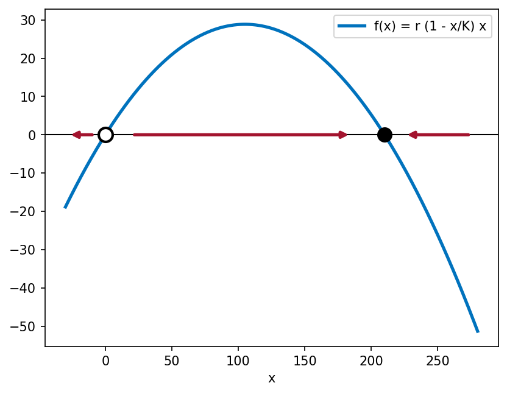
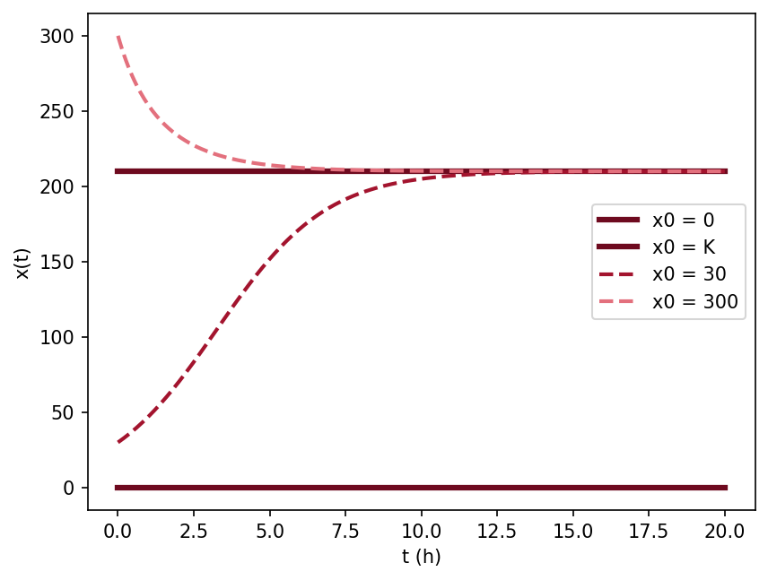
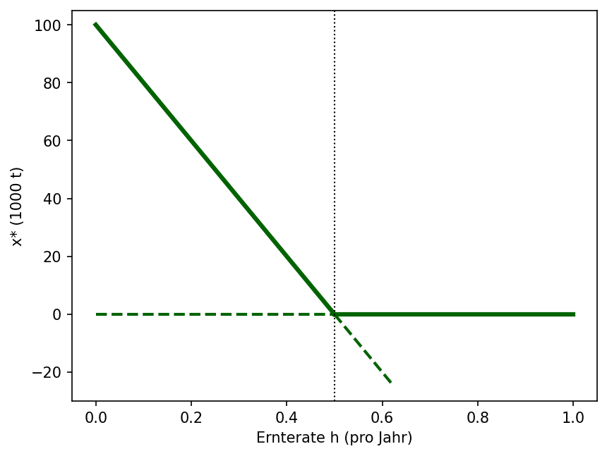
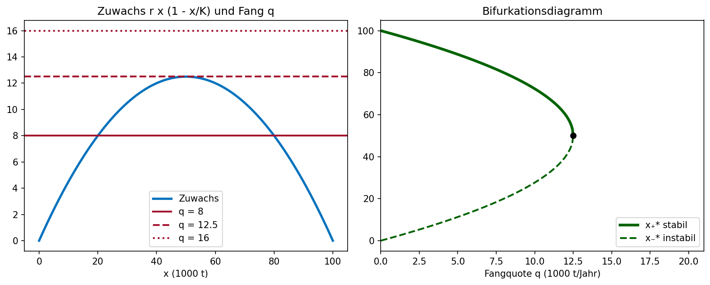
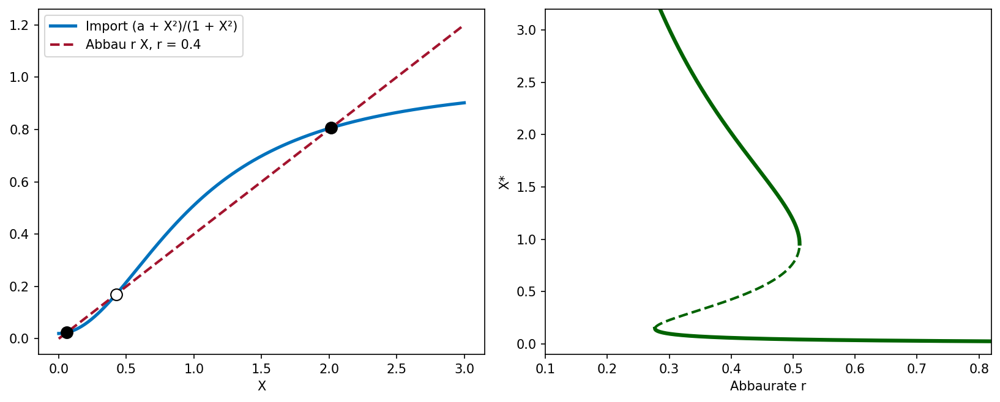

Kapitel 3 · Kontinuierliche dynamische Systeme mit einer Variablen
3.3Stationäre Lösungen und Stabilität
Eine autonome Differentialgleichung dx/dt = f(x) ist stationär, wo f(x*) = 0 ist. Ob die Lösungen zu x* hin oder von x* weg laufen, zeigt die Phasenlinie, rechnerisch das Vorzeichen von f′(x*). Hängt f von einem Parameter ab, beschreibt das Bifurkationsdiagramm, wie sich die stationären Zustände verändern – etwa bei der Befischung eines Bestands oder beim Genschalter des lac-Operons.
Zu jeder Abbildung des Abschnitts finden Sie das Programm, das sie erzeugt. Ändern Sie Parameter und Startwerte und beobachten Sie, was passiert. Abbildungs- und Gleichungsnummern beziehen sich auf das Buch.
Abb. 3.14
Phasenlinie des logistischen Modells
f(x) = r (1 − x/K) x, f′(0) = r > 0, f′(K) = −r < 0
Wo f positiv ist, wächst x, wo f negativ ist, fällt x. Daher ist x* = K stabil (gefüllt) und x* = 0 instabil (offen).

# Abb. 3.14: Phasenlinie des logistischen Modells (Buch, Abschnitt 3.3, Gl. 3.22)
# f(x) = r (1 - x/K) x mit r = 0.55, K = 210; wo f > 0 ist, wächst x (Pfeil nach rechts), wo f < 0 ist, fällt x
# (c) 2026 Philipp Kügler · Programm zum Buch „Dynamische Systeme in den Lebenswissenschaften“ · MIT-Lizenz (siehe LICENSE)
using Printf, Plots
r = 0.55; K = 210
f(x) = r * (1 - x / K) * x
df(x) = r * (1 - 2x / K) # Ableitung f'(x)
x = range(-30, 280, length = 400)
p = plot(x, f.(x), color = RGB(0, 0.447, 0.741), lw = 2.5, label = "f(x) = r (1 - x/K) x", xlabel = "x")
hline!(p, [0], color = :black, label = "")
for (von, bis) in [(20, 185), (275, 225), (-8, -28)] # Phasenlinie: Bewegungsrichtung von x
plot!(p, [von, bis], [0, 0], arrow = true, color = RGB(0.64, 0.08, 0.18), lw = 2.5, label = "")
end
scatter!(p, [0], [0], color = :white, msc = :black, ms = 7, label = ""); scatter!(p, [K], [0], color = :black, ms = 7, label = "")
for xs in (0, K)
@printf("x* = %3d: f'(x*) = %5.2f -> %s\n", xs, df(xs), df(xs) < 0 ? "stabil" : "instabil")
end
display(p)% Abb. 3.14: Phasenlinie des logistischen Modells (Buch, Abschnitt 3.3, Gl. 3.22)
% f(x) = r (1 - x/K) x mit r = 0.55, K = 210; wo f > 0 ist, wächst x (Pfeil nach rechts), wo f < 0 ist, fällt x
% (c) 2026 Philipp Kügler · Programm zum Buch „Dynamische Systeme in den Lebenswissenschaften“ · MIT-Lizenz (siehe LICENSE)
r = 0.55; K = 210;
f = @(x) r * (1 - x / K) .* x;
df = @(x) r * (1 - 2 * x / K); % Ableitung f'(x)
x = linspace(-30, 280, 400);
plot(x, f(x), 'Color', [0 0.447 0.741], 'LineWidth', 2.5); hold on
plot([-30 280], [0 0], 'k');
von = [20 275 -8]; nach = [185 225 -28]; % Phasenlinie: Bewegungsrichtung von x
for i = 1:3
if nach(i) > von(i), spitze = '>'; else, spitze = '<'; end
plot([von(i) nach(i)], [0 0], 'Color', [0.64 0.08 0.18], 'LineWidth', 2.5);
plot(nach(i), 0, spitze, 'Color', [0.64 0.08 0.18], 'MarkerFaceColor', [0.64 0.08 0.18], 'MarkerSize', 9);
end
plot(0, 0, 'ko', 'MarkerFaceColor', 'w', 'MarkerSize', 10); plot(K, 0, 'ko', 'MarkerFaceColor', 'k', 'MarkerSize', 10); hold off
for xs = [0 K]
if df(xs) < 0, art = 'stabil'; else, art = 'instabil'; end
fprintf('x* = %3d: f''(x*) = %5.2f -> %s\n', xs, df(xs), art);
end
xlabel('x'); legend('f(x) = r (1 - x/K) x');# Abb. 3.14: Phasenlinie des logistischen Modells (Buch, Abschnitt 3.3, Gl. 3.22)
# f(x) = r (1 - x/K) x mit r = 0.55, K = 210; wo f > 0 ist, wächst x (Pfeil nach rechts), wo f < 0 ist, fällt x
# (c) 2026 Philipp Kügler · Programm zum Buch „Dynamische Systeme in den Lebenswissenschaften“ · MIT-Lizenz (siehe LICENSE)
import numpy as np
import matplotlib.pyplot as plt
r, K = 0.55, 210
f = lambda x: r * (1 - x / K) * x
df = lambda x: r * (1 - 2 * x / K) # Ableitung f'(x)
x = np.linspace(-30, 280, 400)
plt.plot(x, f(x), color=(0, 0.447, 0.741), lw=2.5, label="f(x) = r (1 - x/K) x")
plt.axhline(0, color="k", lw=1)
for a, b in [(20, 185), (275, 225), (-8, -28)]: # Phasenlinie: Bewegungsrichtung von x
plt.annotate("", xy=(b, 0), xytext=(a, 0), arrowprops=dict(arrowstyle="-|>", color=(0.64, 0.08, 0.18), lw=2.5))
plt.plot(0, 0, "o", ms=11, mfc="w", mec="k", mew=2); plt.plot(K, 0, "ko", ms=11)
for xs in [0, K]:
print(f"x* = {xs:3d}: f'(x*) = {df(xs):5.2f} ->", "stabil" if df(xs) < 0 else "instabil")
plt.xlabel("x"); plt.legend()
plt.show()# Abb. 3.14: Phasenlinie des logistischen Modells (Buch, Abschnitt 3.3, Gl. 3.22)
# f(x) = r (1 - x/K) x mit r = 0.55, K = 210; wo f > 0 ist, wächst x (Pfeil nach rechts), wo f < 0 ist, fällt x
# (c) 2026 Philipp Kügler · Programm zum Buch „Dynamische Systeme in den Lebenswissenschaften“ · MIT-Lizenz (siehe LICENSE)
r <- 0.55; K <- 210
f <- function(x) r * (1 - x / K) * x
df <- function(x) r * (1 - 2 * x / K) # Ableitung f'(x)
x <- seq(-30, 280, length.out = 400)
plot(x, f(x), type = "l", col = rgb(0, 0.447, 0.741), lwd = 2.5, xlab = "x", ylab = "")
abline(h = 0)
arrows(c(20, 275, -8), 0, c(185, 225, -28), 0, col = rgb(0.64, 0.08, 0.18), lwd = 2.5, length = 0.12) # Phasenlinie
points(0, 0, pch = 21, bg = "white", cex = 1.5); points(K, 0, pch = 16, cex = 1.5)
for (xs in c(0, K)) cat(sprintf("x* = %3d: f'(x*) = %5.2f -> %s\n", xs, df(xs), if (df(xs) < 0) "stabil" else "instabil"))
legend("topright", legend = "f(x) = r (1 - x/K) x", col = rgb(0, 0.447, 0.741), lwd = 2.5)Ausgabe im Befehlsfenster
x* = 0: f'(x*) = 0.55 -> instabil
x* = 210: f'(x*) = -0.55 -> stabilAbb. 3.15
Lösungen und stationäre Lösungen
x(0) = 0, 30, K, 300
Die stationären Lösungen x = 0 und x = K sind waagrechte Geraden. Keine andere Lösung erreicht oder kreuzt sie.

# Abb. 3.15: Lösungen des logistischen Modells zu verschiedenen Startwerten (Buch, Abschnitt 3.3)
# r = 0.55, K = 210; die stationären Lösungen x = 0 und x = K werden von keiner anderen Lösung erreicht oder überquert
# (c) 2026 Philipp Kügler · Programm zum Buch „Dynamische Systeme in den Lebenswissenschaften“ · MIT-Lizenz (siehe LICENSE)
using Printf, Plots
r = 0.55; K = 210
x(t, x0) = x0 * K / (x0 + (K - x0) * exp(-r * t))
t = range(0, 20, length = 300)
p = plot(t, zero.(t), color = RGB(0.43, 0.04, 0.12), lw = 3, label = "x0 = 0", xlabel = "t (h)", ylabel = "x(t)", legend = :right)
plot!(p, t, zero.(t) .+ K, color = RGB(0.43, 0.04, 0.12), lw = 3, label = "x0 = K")
plot!(p, t, x.(t, 30), ls = :dash, color = RGB(0.64, 0.08, 0.18), lw = 2, label = "x0 = 30")
plot!(p, t, x.(t, 300), ls = :dash, color = RGB(0.89, 0.44, 0.49), lw = 2, label = "x0 = 300")
for x0 in (30, 300)
@printf("x0 = %d: x(20) = %.3f, Abstand zu K: %.3f\n", x0, x(20, x0), abs(x(20, x0) - K))
end
display(p)% Abb. 3.15: Lösungen des logistischen Modells zu verschiedenen Startwerten (Buch, Abschnitt 3.3)
% r = 0.55, K = 210; die stationären Lösungen x = 0 und x = K werden von keiner anderen Lösung erreicht oder überquert
% (c) 2026 Philipp Kügler · Programm zum Buch „Dynamische Systeme in den Lebenswissenschaften“ · MIT-Lizenz (siehe LICENSE)
r = 0.55; K = 210;
x = @(t, x0) x0 * K ./ (x0 + (K - x0) * exp(-r * t));
t = linspace(0, 20, 300);
plot(t, 0 * t, 'Color', [0.43 0.04 0.12], 'LineWidth', 3); hold on
plot(t, 0 * t + K, 'Color', [0.43 0.04 0.12], 'LineWidth', 3);
plot(t, x(t, 30), '--', 'Color', [0.64 0.08 0.18], 'LineWidth', 2);
plot(t, x(t, 300), '--', 'Color', [0.89 0.44 0.49], 'LineWidth', 2); hold off
for x0 = [30 300]
fprintf('x0 = %d: x(20) = %.3f, Abstand zu K: %.3f\n', x0, x(20, x0), abs(x(20, x0) - K));
end
xlabel('t (h)'); ylabel('x(t)'); legend('x0 = 0', 'x0 = K', 'x0 = 30', 'x0 = 300', 'Location', 'east');# Abb. 3.15: Lösungen des logistischen Modells zu verschiedenen Startwerten (Buch, Abschnitt 3.3)
# r = 0.55, K = 210; die stationären Lösungen x = 0 und x = K werden von keiner anderen Lösung erreicht oder überquert
# (c) 2026 Philipp Kügler · Programm zum Buch „Dynamische Systeme in den Lebenswissenschaften“ · MIT-Lizenz (siehe LICENSE)
import numpy as np
import matplotlib.pyplot as plt
r, K = 0.55, 210
x = lambda t, x0: x0 * K / (x0 + (K - x0) * np.exp(-r * t))
t = np.linspace(0, 20, 300)
plt.plot(t, 0 * t, color=(0.43, 0.04, 0.12), lw=3, label="x0 = 0")
plt.plot(t, 0 * t + K, color=(0.43, 0.04, 0.12), lw=3, label="x0 = K")
plt.plot(t, x(t, 30), "--", color=(0.64, 0.08, 0.18), lw=2, label="x0 = 30")
plt.plot(t, x(t, 300), "--", color=(0.89, 0.44, 0.49), lw=2, label="x0 = 300")
for x0 in [30, 300]:
print(f"x0 = {x0}: x(20) = {x(20, x0):.3f}, Abstand zu K: {abs(x(20, x0) - K):.3f}")
plt.xlabel("t (h)"); plt.ylabel("x(t)"); plt.legend(loc="center right")
plt.show()# Abb. 3.15: Lösungen des logistischen Modells zu verschiedenen Startwerten (Buch, Abschnitt 3.3)
# r = 0.55, K = 210; die stationären Lösungen x = 0 und x = K werden von keiner anderen Lösung erreicht oder überquert
# (c) 2026 Philipp Kügler · Programm zum Buch „Dynamische Systeme in den Lebenswissenschaften“ · MIT-Lizenz (siehe LICENSE)
r <- 0.55; K <- 210
x <- function(t, x0) x0 * K / (x0 + (K - x0) * exp(-r * t))
t <- seq(0, 20, length.out = 300)
plot(t, 0 * t, type = "l", col = rgb(0.43, 0.04, 0.12), lwd = 3, ylim = c(-10, 320), xlab = "t (h)", ylab = "x(t)")
lines(t, 0 * t + K, col = rgb(0.43, 0.04, 0.12), lwd = 3)
lines(t, x(t, 30), lty = 2, col = rgb(0.64, 0.08, 0.18), lwd = 2)
lines(t, x(t, 300), lty = 2, col = rgb(0.89, 0.44, 0.49), lwd = 2)
for (x0 in c(30, 300)) cat(sprintf("x0 = %d: x(20) = %.3f, Abstand zu K: %.3f\n", x0, x(20, x0), abs(x(20, x0) - K)))
legend("right", legend = c("x0 = 0 bzw. K", "x0 = 30", "x0 = 300"), col = c(rgb(0.43, 0.04, 0.12), rgb(0.64, 0.08, 0.18), rgb(0.89, 0.44, 0.49)),
lty = c(1, 2, 2), lwd = c(3, 2, 2))Ausgabe im Befehlsfenster
x0 = 30: x(20) = 209.979, Abstand zu K: 0.021
x0 = 300: x(20) = 210.001, Abstand zu K: 0.001Abb. 3.16
Fischbestand mit Ernterate
dx/dt = r (1 − x/K) x − h x
Solange die Ernterate h kleiner als r ist, bleibt ein Bestand x* = K (1 − h/r) erhalten. Bei h = r tauschen die beiden stationären Zustände ihre Stabilität.

# Abb. 3.16: Fischbestand mit Ernte, stationäre Zustände in Abhängigkeit von der Ernterate (Buch, Abschnitt 3.3)
# dx/dt = r (1 - x/K) x - h x mit r = 0.5 pro Jahr, K = 100 (1000 t): x_a* = 0 und x_b* = K (1 - h/r)
# (c) 2026 Philipp Kügler · Programm zum Buch „Dynamische Systeme in den Lebenswissenschaften“ · MIT-Lizenz (siehe LICENSE)
using Printf, Plots
r = 0.5; K = 100
gruen = RGB(0, 0.39, 0)
h = range(0, 1, length = 301)
li = h .<= r; re = h .>= r; nah = (h .>= r) .& (h .<= 0.62)
p = plot(h[li], 0 .* h[li], ls = :dash, color = gruen, lw = 2, legend = false, ylims = (-30, 105),
xlabel = "Ernterate h (pro Jahr)", ylabel = "x* (1000 t)") # x_a* instabil für h < r
plot!(p, h[re], 0 .* h[re], color = gruen, lw = 3) # stabil für h > r
plot!(p, h[li], K .* (1 .- h[li] ./ r), color = gruen, lw = 3) # x_b* stabil für h < r
plot!(p, h[nah], K .* (1 .- h[nah] ./ r), ls = :dash, color = gruen, lw = 2)
vline!(p, [r], ls = :dot, color = :black)
for hh in (0.1, 0.25, 0.4)
@printf("h = %g: x_b* = %.0f, Ertrag h x_b* = %.2f\n", hh, K * (1 - hh / r), hh * K * (1 - hh / r))
end
display(p)% Abb. 3.16: Fischbestand mit Ernte, stationäre Zustände in Abhängigkeit von der Ernterate (Buch, Abschnitt 3.3)
% dx/dt = r (1 - x/K) x - h x mit r = 0.5 pro Jahr, K = 100 (1000 t): x_a* = 0 und x_b* = K (1 - h/r)
% (c) 2026 Philipp Kügler · Programm zum Buch „Dynamische Systeme in den Lebenswissenschaften“ · MIT-Lizenz (siehe LICENSE)
r = 0.5; K = 100;
gruen = [0 0.39 0];
h = linspace(0, 1, 301);
li = h <= r; re = h >= r; nah = h >= r & h <= 0.62;
plot(h(li), 0 * h(li), '--', 'Color', gruen, 'LineWidth', 2); hold on % x_a* instabil für h < r
plot(h(re), 0 * h(re), 'Color', gruen, 'LineWidth', 3); % stabil für h > r
plot(h(li), K * (1 - h(li) / r), 'Color', gruen, 'LineWidth', 3); % x_b* stabil für h < r
plot(h(nah), K * (1 - h(nah) / r), '--', 'Color', gruen, 'LineWidth', 2);
plot([r r], [-30 105], 'k:'); hold off
for hh = [0.1 0.25 0.4]
fprintf('h = %g: x_b* = %.0f, Ertrag h x_b* = %.2f\n', hh, K * (1 - hh / r), hh * K * (1 - hh / r));
end
xlabel('Ernterate h (pro Jahr)'); ylabel('x* (1000 t)'); ylim([-30 105]);# Abb. 3.16: Fischbestand mit Ernte, stationäre Zustände in Abhängigkeit von der Ernterate (Buch, Abschnitt 3.3)
# dx/dt = r (1 - x/K) x - h x mit r = 0.5 pro Jahr, K = 100 (1000 t): x_a* = 0 und x_b* = K (1 - h/r)
# (c) 2026 Philipp Kügler · Programm zum Buch „Dynamische Systeme in den Lebenswissenschaften“ · MIT-Lizenz (siehe LICENSE)
import numpy as np
import matplotlib.pyplot as plt
r, K = 0.5, 100
gruen = (0, 0.39, 0)
h = np.linspace(0, 1, 301)
li, re = h <= r, h >= r
plt.plot(h[li], 0 * h[li], "--", color=gruen, lw=2) # x_a* instabil für h < r
plt.plot(h[re], 0 * h[re], color=gruen, lw=3) # stabil für h > r
plt.plot(h[li], K * (1 - h[li] / r), color=gruen, lw=3) # x_b* stabil für h < r
nah = (h >= r) & (h <= 0.62)
plt.plot(h[nah], K * (1 - h[nah] / r), "--", color=gruen, lw=2)
plt.axvline(r, color="k", ls=":", lw=1)
for hh in [0.1, 0.25, 0.4]:
print(f"h = {hh}: x_b* = {K * (1 - hh / r):.0f}, Ertrag h x_b* = {hh * K * (1 - hh / r):.2f}")
plt.xlabel("Ernterate h (pro Jahr)"); plt.ylabel("x* (1000 t)"); plt.ylim(-30, 105)
plt.show()# Abb. 3.16: Fischbestand mit Ernte, stationäre Zustände in Abhängigkeit von der Ernterate (Buch, Abschnitt 3.3)
# dx/dt = r (1 - x/K) x - h x mit r = 0.5 pro Jahr, K = 100 (1000 t): x_a* = 0 und x_b* = K (1 - h/r)
# (c) 2026 Philipp Kügler · Programm zum Buch „Dynamische Systeme in den Lebenswissenschaften“ · MIT-Lizenz (siehe LICENSE)
r <- 0.5; K <- 100
gruen <- rgb(0, 0.39, 0)
h <- seq(0, 1, length.out = 301)
li <- h <= r; re <- h >= r; nah <- h >= r & h <= 0.62
plot(h[li], 0 * h[li], type = "l", lty = 2, col = gruen, lwd = 2, xlim = c(0, 1), ylim = c(-30, 105),
xlab = "Ernterate h (pro Jahr)", ylab = "x* (1000 t)") # x_a* instabil für h < r
lines(h[re], 0 * h[re], col = gruen, lwd = 3) # stabil für h > r
lines(h[li], K * (1 - h[li] / r), col = gruen, lwd = 3) # x_b* stabil für h < r
lines(h[nah], K * (1 - h[nah] / r), lty = 2, col = gruen, lwd = 2)
abline(v = r, lty = 3)
for (hh in c(0.1, 0.25, 0.4)) cat(sprintf("h = %g: x_b* = %.0f, Ertrag h x_b* = %.2f\n", hh, K * (1 - hh / r), hh * K * (1 - hh / r)))Ausgabe im Befehlsfenster
h = 0.1: x_b* = 80, Ertrag h x_b* = 8.00
h = 0.25: x_b* = 50, Ertrag h x_b* = 12.50
h = 0.4: x_b* = 20, Ertrag h x_b* = 8.00Abb. 3.17
Fischbestand mit fester Fangquote
dx/dt = r (1 − x/K) x − q
Mit fester Quote verschmelzen bei q = rK/4 der stabile und der instabile Zustand und verschwinden. Eine größere Quote führt zum Zusammenbruch des Bestands.

# Abb. 3.17: Ernte mit fester Fangquote (Buch, Abschnitt 3.3)
# dx/dt = r (1 - x/K) x - q mit r = 0.5, K = 100; stationär bei x* = K/2 (1 ± sqrt(1 - 4q/(rK))), solange q <= rK/4 = 12.5
# (c) 2026 Philipp Kügler · Programm zum Buch „Dynamische Systeme in den Lebenswissenschaften“ · MIT-Lizenz (siehe LICENSE)
using Printf, Plots
r = 0.5; K = 100
gruen = RGB(0, 0.39, 0)
x = range(0, 100, length = 300)
p1 = plot(x, r .* x .* (1 .- x ./ K), color = RGB(0, 0.447, 0.741), lw = 2.5, label = "Zuwachs", xlabel = "x (1000 t)",
title = "Zuwachs r x (1 - x/K) und Fang q", titlefontsize = 10)
for (q, stil) in zip([8, 12.5, 16], [:solid, :dash, :dot])
hline!(p1, [q], ls = stil, color = RGB(0.64, 0.08, 0.18), lw = 2, label = "q = $q")
end
q = range(0, 12.5, length = 300)
w = sqrt.(max.(0, 1 .- 4 .* q ./ (r * K))) # max(0, ...) fängt Rundungsfehler bei q = rK/4 ab
p2 = plot(q, K / 2 .* (1 .+ w), color = gruen, lw = 3, label = "x₊* stabil", xlims = (0, 21), legend = :bottomright,
xlabel = "Fangquote q (1000 t/Jahr)", title = "Bifurkationsdiagramm", titlefontsize = 10)
plot!(p2, q, K / 2 .* (1 .- w), ls = :dash, color = gruen, lw = 2, label = "x₋* instabil"); scatter!(p2, [12.5], [50], color = :black, label = "")
for qq in (8, 12.5)
ww = sqrt(max(0, 1 - 4qq / (r * K)))
@printf("q = %g: x_- = %.2f, x_+ = %.2f\n", qq, K / 2 * (1 - ww), K / 2 * (1 + ww))
end
@printf("größte Fangquote (MSY): q = rK/4 = %g\n", r * K / 4)
display(plot(p1, p2, layout = (1, 2), size = (900, 420)))% Abb. 3.17: Ernte mit fester Fangquote (Buch, Abschnitt 3.3)
% dx/dt = r (1 - x/K) x - q mit r = 0.5, K = 100; stationär bei x* = K/2 (1 ± sqrt(1 - 4q/(rK))), solange q <= rK/4 = 12.5
% (c) 2026 Philipp Kügler · Programm zum Buch „Dynamische Systeme in den Lebenswissenschaften“ · MIT-Lizenz (siehe LICENSE)
r = 0.5; K = 100;
gruen = [0 0.39 0];
subplot(1, 2, 1);
x = linspace(0, 100, 300);
plot(x, r * x .* (1 - x / K), 'Color', [0 0.447 0.741], 'LineWidth', 2.5); hold on
qs = [8 12.5 16]; stil = {'-', '--', ':'};
for i = 1:3
plot([0 100], [qs(i) qs(i)], stil{i}, 'Color', [0.64 0.08 0.18], 'LineWidth', 2);
end
hold off
xlabel('x (1000 t)'); title('Zuwachs r x (1 - x/K) und Fang q'); legend('Zuwachs', 'q = 8', 'q = 12.5', 'q = 16');
subplot(1, 2, 2);
q = linspace(0, 12.5, 300);
w = sqrt(1 - 4 * q / (r * K));
plot(q, K / 2 * (1 + w), 'Color', gruen, 'LineWidth', 3); hold on
plot(q, K / 2 * (1 - w), '--', 'Color', gruen, 'LineWidth', 2); plot(12.5, 50, 'ko', 'MarkerFaceColor', 'k'); hold off
xlim([0 21]); xlabel('Fangquote q (1000 t/Jahr)'); title('Bifurkationsdiagramm');
legend('x_+^* stabil', 'x_-^* instabil', 'Location', 'southeast');
for qq = [8 12.5]
ww = sqrt(1 - 4 * qq / (r * K));
fprintf('q = %g: x_- = %.2f, x_+ = %.2f\n', qq, K / 2 * (1 - ww), K / 2 * (1 + ww));
end
fprintf('größte Fangquote (MSY): q = rK/4 = %g\n', r * K / 4);# Abb. 3.17: Ernte mit fester Fangquote (Buch, Abschnitt 3.3)
# dx/dt = r (1 - x/K) x - q mit r = 0.5, K = 100; stationär bei x* = K/2 (1 ± sqrt(1 - 4q/(rK))), solange q <= rK/4 = 12.5
# (c) 2026 Philipp Kügler · Programm zum Buch „Dynamische Systeme in den Lebenswissenschaften“ · MIT-Lizenz (siehe LICENSE)
import numpy as np
import matplotlib.pyplot as plt
r, K = 0.5, 100
gruen = (0, 0.39, 0)
fig, axs = plt.subplots(1, 2, figsize=(11, 4.5))
x = np.linspace(0, 100, 300)
axs[0].plot(x, r * x * (1 - x / K), color=(0, 0.447, 0.741), lw=2.5, label="Zuwachs")
for q, ls in zip([8, 12.5, 16], ["-", "--", ":"]):
axs[0].axhline(q, color=(0.64, 0.08, 0.18), lw=2, ls=ls, label=f"q = {q}")
axs[0].set_xlabel("x (1000 t)"); axs[0].set_title("Zuwachs r x (1 - x/K) und Fang q"); axs[0].legend()
q = np.linspace(0, 12.5, 300)
w = np.sqrt(1 - 4 * q / (r * K))
axs[1].plot(q, K / 2 * (1 + w), color=gruen, lw=3, label="x₊* stabil")
axs[1].plot(q, K / 2 * (1 - w), "--", color=gruen, lw=2, label="x₋* instabil")
axs[1].plot(12.5, 50, "ko"); axs[1].set_xlim(0, 21)
axs[1].set_xlabel("Fangquote q (1000 t/Jahr)"); axs[1].set_title("Bifurkationsdiagramm"); axs[1].legend(loc="lower right")
for qq in [8, 12.5]:
ww = np.sqrt(1 - 4 * qq / (r * K))
print(f"q = {qq}: x_- = {K / 2 * (1 - ww):.2f}, x_+ = {K / 2 * (1 + ww):.2f}")
print(f"größte Fangquote (MSY): q = rK/4 = {r * K / 4}")
plt.tight_layout()
plt.show()# Abb. 3.17: Ernte mit fester Fangquote (Buch, Abschnitt 3.3)
# dx/dt = r (1 - x/K) x - q mit r = 0.5, K = 100; stationär bei x* = K/2 (1 ± sqrt(1 - 4q/(rK))), solange q <= rK/4 = 12.5
# (c) 2026 Philipp Kügler · Programm zum Buch „Dynamische Systeme in den Lebenswissenschaften“ · MIT-Lizenz (siehe LICENSE)
r <- 0.5; K <- 100
gruen <- rgb(0, 0.39, 0)
par(mfrow = c(1, 2))
x <- seq(0, 100, length.out = 300)
plot(x, r * x * (1 - x / K), type = "l", col = rgb(0, 0.447, 0.741), lwd = 2.5, ylim = c(0, 17), xlab = "x (1000 t)", ylab = "",
main = "Zuwachs r x (1 - x/K) und Fang q")
qs <- c(8, 12.5, 16)
for (i in 1:3) abline(h = qs[i], lty = i, col = rgb(0.64, 0.08, 0.18), lwd = 2)
legend("bottom", legend = c("Zuwachs", sprintf("q = %g", qs)), col = c(rgb(0, 0.447, 0.741), rep(rgb(0.64, 0.08, 0.18), 3)), lty = c(1, 1:3), lwd = 2, cex = 0.8)
q <- seq(0, 12.5, length.out = 300)
w <- sqrt(1 - 4 * q / (r * K))
plot(q, K / 2 * (1 + w), type = "l", col = gruen, lwd = 3, xlim = c(0, 21), ylim = c(0, 100),
xlab = "Fangquote q (1000 t/Jahr)", ylab = "", main = "Bifurkationsdiagramm")
lines(q, K / 2 * (1 - w), lty = 2, col = gruen, lwd = 2); points(12.5, 50, pch = 16)
legend("bottomright", legend = c("x_+* stabil", "x_-* instabil"), col = gruen, lty = 1:2, lwd = c(3, 2))
for (qq in c(8, 12.5)) {
ww <- sqrt(1 - 4 * qq / (r * K))
cat(sprintf("q = %g: x_- = %.2f, x_+ = %.2f\n", qq, K / 2 * (1 - ww), K / 2 * (1 + ww)))
}
cat(sprintf("größte Fangquote (MSY): q = rK/4 = %g\n", r * K / 4))Ausgabe im Befehlsfenster
q = 8: x_- = 20.00, x_+ = 80.00
q = 12.5: x_- = 50.00, x_+ = 50.00
größte Fangquote (MSY): q = rK/4 = 12.5Abb. 3.18
Genschalter des lac-Operons
dX/dt = (a + X2)/(1 + X2) − r X
Für 0.28 < r < 0.51 gibt es zwei stabile Zustände, „aus“ und „an“. Das Programm bestimmt sie als Nullstellen eines Polynoms und berechnet die Umkehrpunkte der Hysteresekurve.

# Abb. 3.18: Genschalter des lac-Operons (Buch, Abschnitt 3.3, Gl. 3.23)
# dX/dt = (a + X^2)/(1 + X^2) - r X mit a = 0.02; links Import und Abbau für r = 0.4, rechts X* in Abhängigkeit von r (Hysterese)
# (c) 2026 Philipp Kügler · Programm zum Buch „Dynamische Systeme in den Lebenswissenschaften“ · MIT-Lizenz (siehe LICENSE)
using Printf, Plots
using LinearAlgebra
a = 0.02
imp(X) = (a + X^2) / (1 + X^2)
X = range(0, 3, length = 400); r = 0.4
p1 = plot(X, imp.(X), color = RGB(0, 0.447, 0.741), lw = 2.5, label = "Import (a + X²)/(1 + X²)", legend = :topleft, xlabel = "X")
plot!(p1, X, r .* X, ls = :dash, color = RGB(0.64, 0.08, 0.18), lw = 2, label = "Abbau r X, r = 0.4")
# stationär: (a + X^2) = r X (1 + X^2), also -r X^3 + X^2 - r X + a = 0 (Koeffizienten aufsteigend)
# Nullstellen als Eigenwerte der Begleitmatrix von X^3 - X^2/r + X - a/r
B = [1/r -1 a/r; 1 0 0; 0 1 0]
xs = sort(real.(eigvals(B)))
scatter!(p1, xs, r .* xs, color = [:black, :white, :black], msc = :black, label = "")
println("r = 0.4: X* = ", join([@sprintf("%.3f", x) for x in xs], " "), " (aus, Schwelle, an)")
# Bifurkationsdiagramm: zu jedem X* gehört r = Import(X*)/X*
Xs = range(0.005, 4, length = 4000); R = imp.(Xs) ./ Xs
i1 = argmin(ifelse.(Xs .< 0.5, R, Inf)) # Umkehrpunkte der Kurve: kleinstes r auf dem unteren Ast,
i2 = argmax(ifelse.((Xs .> 0.5) .& (Xs .< 2), R, 0.0)) # größtes r auf dem mittleren Ast
gruen = RGB(0, 0.39, 0)
p2 = plot(R[1:i1], Xs[1:i1], color = gruen, lw = 3, legend = false, xlims = (0.1, 0.82), ylims = (-0.1, 3.2), xlabel = "Abbaurate r", ylabel = "X*")
plot!(p2, R[i1:i2], Xs[i1:i2], ls = :dash, color = gruen, lw = 2)
plot!(p2, R[i2:end], Xs[i2:end], color = gruen, lw = 3)
@printf("bistabil für %.2f < r < %.2f\n", R[i1], R[i2])
display(plot(p1, p2, layout = (1, 2), size = (900, 420)))% Abb. 3.18: Genschalter des lac-Operons (Buch, Abschnitt 3.3, Gl. 3.23)
% dX/dt = (a + X^2)/(1 + X^2) - r X mit a = 0.02; links Import und Abbau für r = 0.4, rechts X* in Abhängigkeit von r (Hysterese)
% (c) 2026 Philipp Kügler · Programm zum Buch „Dynamische Systeme in den Lebenswissenschaften“ · MIT-Lizenz (siehe LICENSE)
a = 0.02;
imp = @(X) (a + X.^2) ./ (1 + X.^2);
subplot(1, 2, 1);
X = linspace(0, 3, 400); r = 0.4;
plot(X, imp(X), 'Color', [0 0.447 0.741], 'LineWidth', 2.5); hold on
plot(X, r * X, '--', 'Color', [0.64 0.08 0.18], 'LineWidth', 2);
% stationär: (a + X^2) = r X (1 + X^2), also -r X^3 + X^2 - r X + a = 0
xs = sort(real(roots([-r 1 -r a])));
for i = 1:3
if i == 2, fc = 'w'; else, fc = 'k'; end
plot(xs(i), r * xs(i), 'ko', 'MarkerFaceColor', fc, 'MarkerSize', 9);
end
hold off
fprintf('r = 0.4: X* = %.3f %.3f %.3f (aus, Schwelle, an)\n', xs);
xlabel('X'); legend('Import (a + X^2)/(1 + X^2)', 'Abbau r X, r = 0.4', 'Location', 'northwest');
% Bifurkationsdiagramm: zu jedem X* gehört r = Import(X*)/X*
subplot(1, 2, 2);
Xs = linspace(0.005, 4, 4000); R = imp(Xs) ./ Xs;
Rk = R; Rk(Xs >= 0.5) = Inf; [~, i1] = min(Rk); % Umkehrpunkte der Kurve: kleinstes r auf dem unteren Ast,
Rg = R; Rg(Xs <= 0.5 | Xs >= 2) = 0; [~, i2] = max(Rg); % größtes r auf dem mittleren Ast
gruen = [0 0.39 0];
plot(R(1:i1), Xs(1:i1), 'Color', gruen, 'LineWidth', 3); hold on
plot(R(i1:i2), Xs(i1:i2), '--', 'Color', gruen, 'LineWidth', 2);
plot(R(i2:end), Xs(i2:end), 'Color', gruen, 'LineWidth', 3); hold off
fprintf('bistabil für %.2f < r < %.2f\n', R(i1), R(i2));
xlim([0.1 0.82]); ylim([-0.1 3.2]); xlabel('Abbaurate r'); ylabel('X*');# Abb. 3.18: Genschalter des lac-Operons (Buch, Abschnitt 3.3, Gl. 3.23)
# dX/dt = (a + X^2)/(1 + X^2) - r X mit a = 0.02; links Import und Abbau für r = 0.4, rechts X* in Abhängigkeit von r (Hysterese)
# (c) 2026 Philipp Kügler · Programm zum Buch „Dynamische Systeme in den Lebenswissenschaften“ · MIT-Lizenz (siehe LICENSE)
import numpy as np
import matplotlib.pyplot as plt
a = 0.02
imp = lambda X: (a + X**2) / (1 + X**2)
fig, axs = plt.subplots(1, 2, figsize=(11, 4.5))
X = np.linspace(0, 3, 400)
r = 0.4
axs[0].plot(X, imp(X), color=(0, 0.447, 0.741), lw=2.5, label="Import (a + X²)/(1 + X²)")
axs[0].plot(X, r * X, "--", color=(0.64, 0.08, 0.18), lw=2, label="Abbau r X, r = 0.4")
# stationär: (a + X^2) = r X (1 + X^2), also -r X^3 + X^2 - r X + a = 0
xs = np.sort(np.roots([-r, 1, -r, a]).real)
for i, x in enumerate(xs):
axs[0].plot(x, r * x, "o", color="k", mfc="w" if i == 1 else "k", ms=9)
print("r = 0.4: X* =", " ".join(f"{x:.3f}" for x in xs), " (aus, Schwelle, an)")
axs[0].set_xlabel("X"); axs[0].legend(loc="upper left")
# Bifurkationsdiagramm: zu jedem X* gehört r = Import(X*)/X*
Xs = np.linspace(0.005, 4, 4000); R = imp(Xs) / Xs
klein, gross = Xs < 0.5, (Xs > 0.5) & (Xs < 2)
i1 = np.argmin(np.where(klein, R, np.inf)) # Umkehrpunkte der Kurve: kleinstes r auf dem unteren Ast,
i2 = np.argmax(np.where(gross, R, 0)) # größtes r auf dem mittleren Ast
gruen = (0, 0.39, 0)
axs[1].plot(R[:i1], Xs[:i1], color=gruen, lw=3)
axs[1].plot(R[i1:i2], Xs[i1:i2], "--", color=gruen, lw=2)
axs[1].plot(R[i2:], Xs[i2:], color=gruen, lw=3)
print(f"bistabil für {R[i1]:.2f} < r < {R[i2]:.2f}")
axs[1].set_xlim(0.1, 0.82); axs[1].set_ylim(-0.1, 3.2); axs[1].set_xlabel("Abbaurate r"); axs[1].set_ylabel("X*")
plt.tight_layout()
plt.show()# Abb. 3.18: Genschalter des lac-Operons (Buch, Abschnitt 3.3, Gl. 3.23)
# dX/dt = (a + X^2)/(1 + X^2) - r X mit a = 0.02; links Import und Abbau für r = 0.4, rechts X* in Abhängigkeit von r (Hysterese)
# (c) 2026 Philipp Kügler · Programm zum Buch „Dynamische Systeme in den Lebenswissenschaften“ · MIT-Lizenz (siehe LICENSE)
a <- 0.02
imp <- function(X) (a + X^2) / (1 + X^2)
par(mfrow = c(1, 2))
X <- seq(0, 3, length.out = 400); r <- 0.4
plot(X, imp(X), type = "l", col = rgb(0, 0.447, 0.741), lwd = 2.5, ylim = c(0, 1.25), xlab = "X", ylab = "")
lines(X, r * X, lty = 2, col = rgb(0.64, 0.08, 0.18), lwd = 2)
# stationär: (a + X^2) = r X (1 + X^2), also -r X^3 + X^2 - r X + a = 0 (polyroot: Koeffizienten aufsteigend)
xs <- sort(Re(polyroot(c(a, -r, 1, -r))))
points(xs, r * xs, pch = 21, bg = c("black", "white", "black"), cex = 1.3)
cat("r = 0.4: X* =", sprintf("%.3f", xs), " (aus, Schwelle, an)\n")
legend("topleft", legend = c("Import (a + X^2)/(1 + X^2)", "Abbau r X, r = 0.4"), col = c(rgb(0, 0.447, 0.741), rgb(0.64, 0.08, 0.18)), lty = 1:2, lwd = 2, cex = 0.8)
# Bifurkationsdiagramm: zu jedem X* gehört r = Import(X*)/X*
Xs <- seq(0.005, 4, length.out = 4000); R <- imp(Xs) / Xs
i1 <- which.min(ifelse(Xs < 0.5, R, Inf)) # Umkehrpunkte der Kurve: kleinstes r auf dem unteren Ast,
i2 <- which.max(ifelse(Xs > 0.5 & Xs < 2, R, 0)) # größtes r auf dem mittleren Ast
gruen <- rgb(0, 0.39, 0)
plot(R[1:i1], Xs[1:i1], type = "l", col = gruen, lwd = 3, xlim = c(0.1, 0.82), ylim = c(-0.1, 3.2), xlab = "Abbaurate r", ylab = "X*")
lines(R[i1:i2], Xs[i1:i2], lty = 2, col = gruen, lwd = 2)
lines(R[i2:length(R)], Xs[i2:length(R)], col = gruen, lwd = 3)
cat(sprintf("bistabil für %.2f < r < %.2f\n", R[i1], R[i2]))Ausgabe im Befehlsfenster
r = 0.4: X* = 0.058 0.425 2.016 (aus, Schwelle, an)
bistabil für 0.28 < r < 0.51Im Browser ausprobieren · ohne Installation
Fischbestand mit Ernte
Logistisches Wachstum mit r = 0,5 und K = 100 (1000 t). Stationär ist ein Bestand, wenn Zuwachs (blau) und Fang (rot) gleich groß sind. Vergleichen Sie eine feste Ernterate mit einer festen Fangquote.
MATLAB-Apps aus der Vorlesung
Herunterladen, in einen Ordner legen und in MATLAB den Namen ohne Endung eingeben, z. B. fischerei_app. Die Apps nutzen die grafische Oberfläche von MATLAB und laufen nicht in GNU Octave.
- fischerei_app.mÜberfischung: logistisches Wachstum mit Befischung
- genschalter_app.mBistabiler Genschalter durch Selbstaktivierung